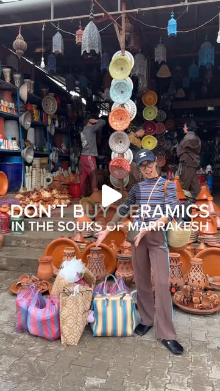

Instagram Reel

Don’t buy ceramics in the souks of Marrakesh, Morocco.
video transcript (enriched by ClaudeClaw)
Summary
[CAPTION]
Don’t buy ceramics in the souks of Marrakesh, Morocco.
Trust me when I say you are going to want to save this because if it wasn’t for my vested interest in making sure I was all over your FYP I would be gatekeeping this gem that we found on our recent trip to Marrakesh, Morocco.
[CAPTION]
Don’t buy ceramics in the souks of Marrakesh, Morocco.
Trust me when I say you are going to want to save this because if it wasn’t for my vested interest in making sure I was all over your FYP I would be gatekeeping this gem that we found on our recent trip to Marrakesh, Morocco.
If you are in the market for ceramics then do not buy these from the souks - sure there are a load of stands selling the stuff but you will notice that the shops all peddle the same thing and they are priced to trap tourists. Instead, head to this ceramics wholesale street we found just outside the souks and you can shop in peace and pay affordable prices for the most wide selection of serving plates, trinket dishes, mugs and other beautiful ceramics!
My entire haul which consisted of fifteen beautiful pieces came to around 700 MAD (aka 60 GBP). So if you are in the market for a ceramic haul then make sure to check this street out on your next trip to Marrakesh!
Pro tip - make sure you have lots of bubble wrap because most stores only have newspaper and you are going to want to buy a lot of goodies and also protect those goodies on your journey back home!
📍Poterie Abdel - 4, Bd Du Golf Souk Erabià - Marrakech
🌟Ask for FAYSAL - 0637896248
MARRAKESH SHOPPING - MARRAKESH MOROCCO - MARRAKESH SOUK HAUL - MARRAKESH TRIP - GIRLS TRIP - MOROCCO TRIO - SHOPPING TRIP - CERAMIC HAUL - INTERIORS - HOME INSPO
#marrakesh #marrakeshmedina #marrakeshstyle #marrakeshtravel #visitmorocco #moroccotravel #moroccovacations #moroccotrip #morrocostyle #visitmarrakesh #souk #soukshopping #soukhaul
[VIDEO]
Don't be a fool and buy ceramics in the soups of Marrakesh. You might think it is preposterous, but I'm telling you, it is a complete waste of time. And if it wasn't for my vested interest in making sure your FYP was filled with what the internet calls my annoying transatlantic accent, I would be gatekeeping this from you. We discovered this real gem that TikTokers and Instahone's are not telling you about. Okay, so the soups are filled with ceramic shops and they all sell the same stuff, and the pieces are all sold at ripoff tourist prices. Yes, you can haggle, but instead of wasting your precious time, head to the ceramic wholesale street we found. There are shops upon shops that are warehouse-styled and filled with ceramics as far as the eye can see. Not only the price is so much more reasonable, but you can shop in peace. Sans crad and sans pushy shopkeepers. This was our favorite shop because the selection in here was top tier. Also, the honeyest of shopkeepers who was so patient with us and was so amenable to running back and forth from the storeroom. Yes, this already massive store also has a separate storeroom to find pieces and alternative clothes. Plus, he's pretty easy on the eyes, and he even bought us newspaper to sit on so our trousers wouldn't get dirty. We had a field day, and what I mean by that is that Emmer and Abby almost missed their desert transfer because they were too busy shopping. We filmed a separate haul of all the ceramics we bought, so make sure to watch this space. But to give you an idea, I bought around 15 pieces of large cookware and serving dishes for 58 pounds.
View original on Instagram Reel →